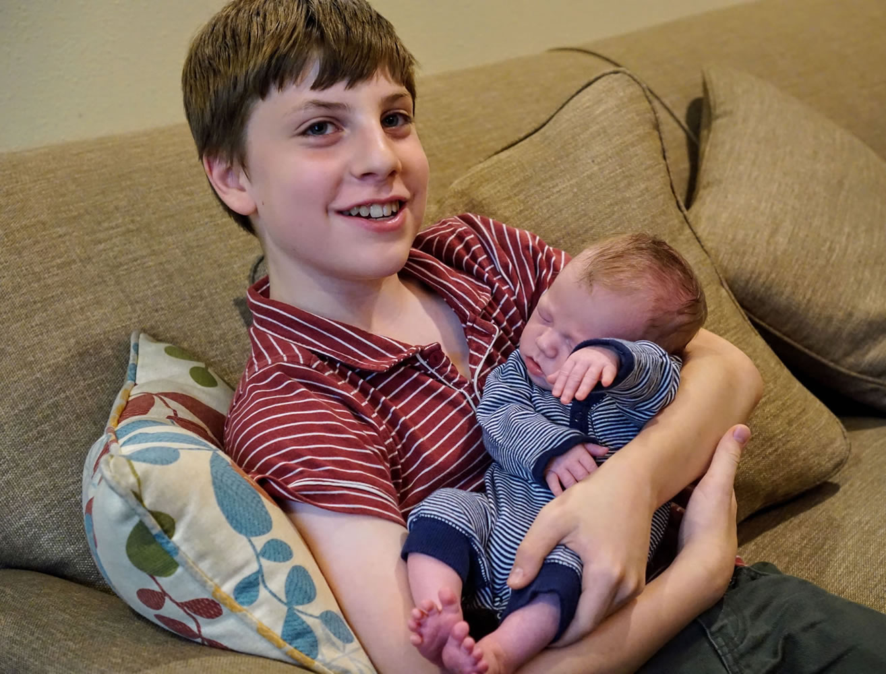
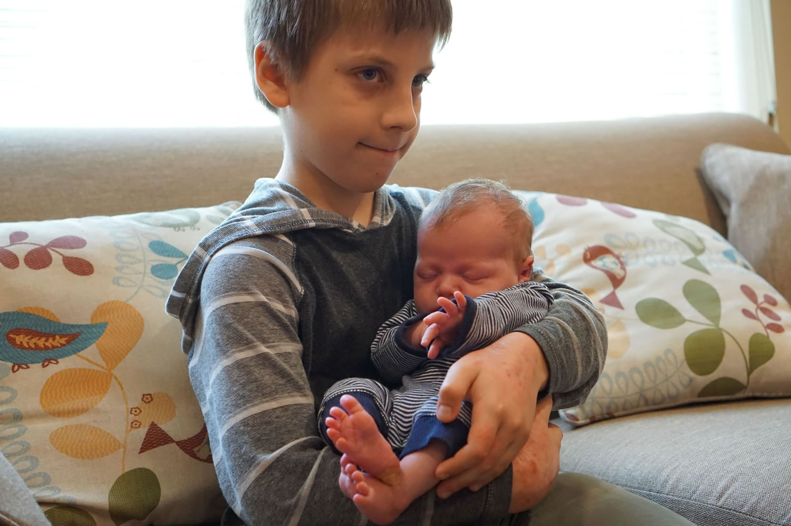
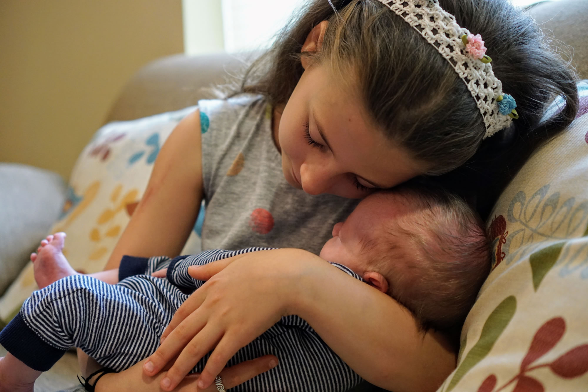
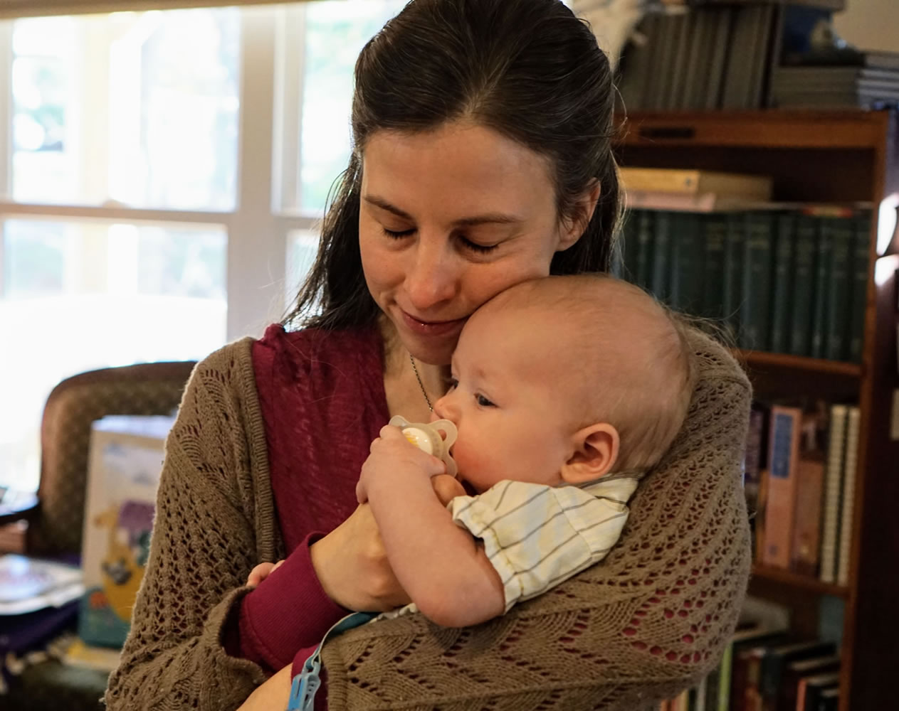
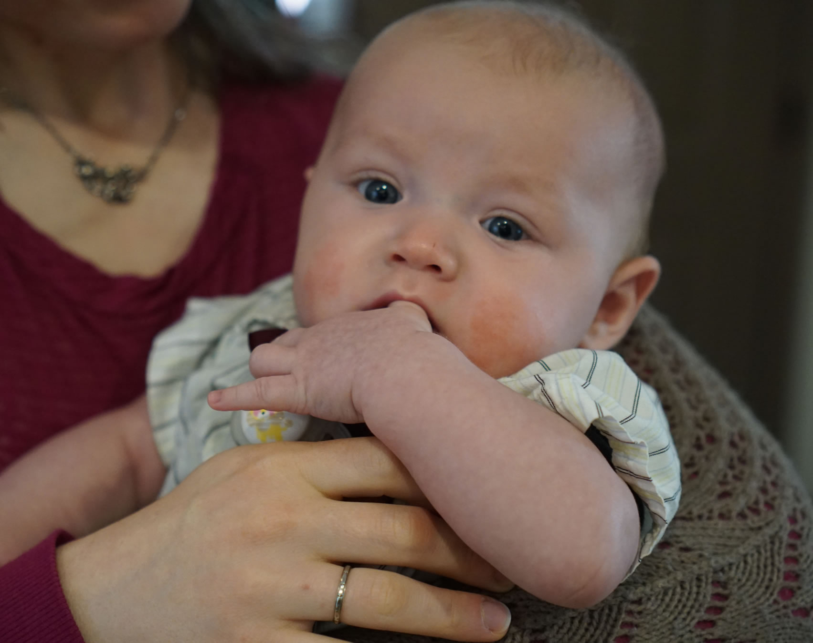

Meet Matthew
- born June 25, 2017
- adopted October 30, 2017
- kid # 5
- sibling rating 10/10
Three weeks later he met the rest of the family




Matthew was officially adopted and declared a Szobody on October 30. He is ours.

